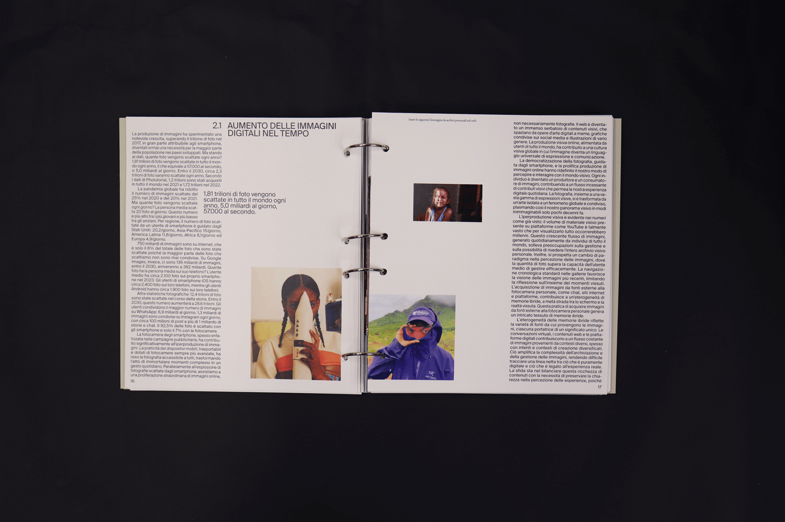
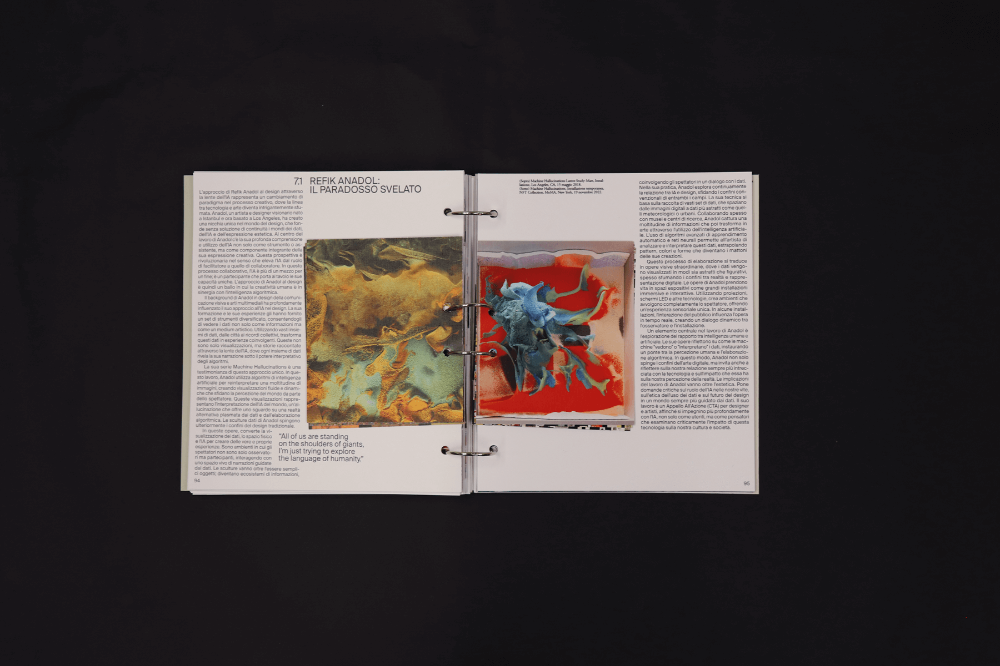
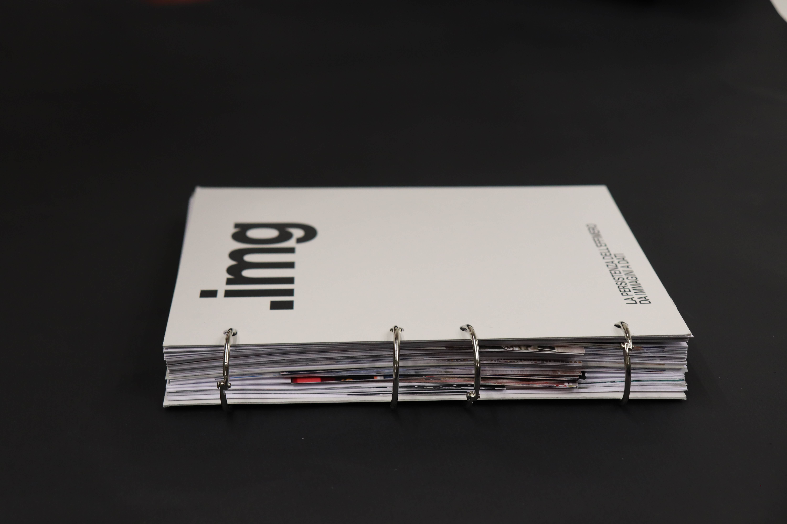
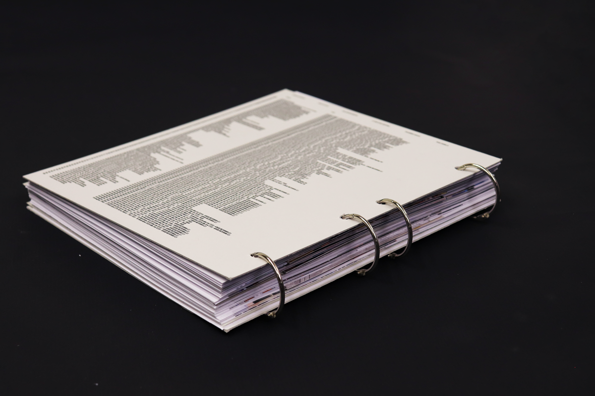
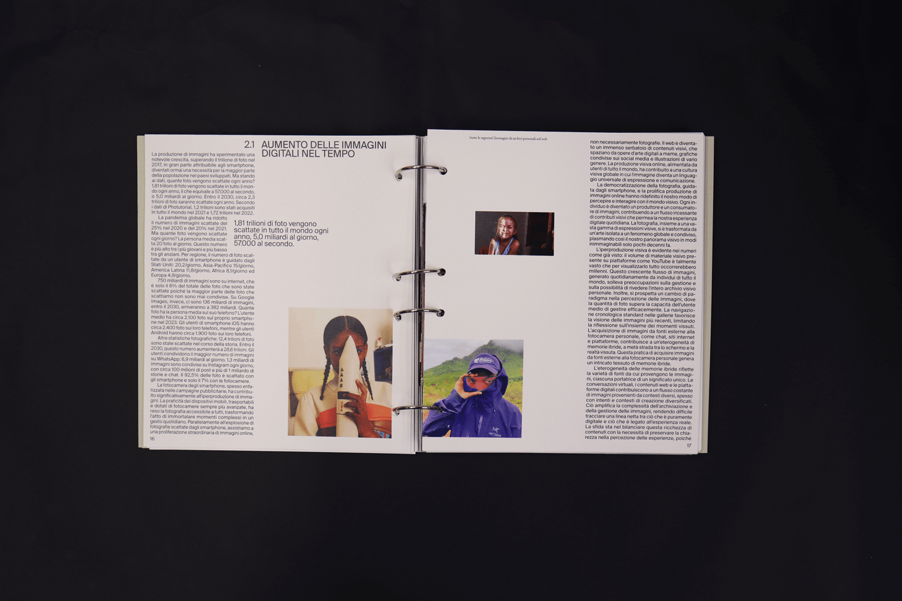
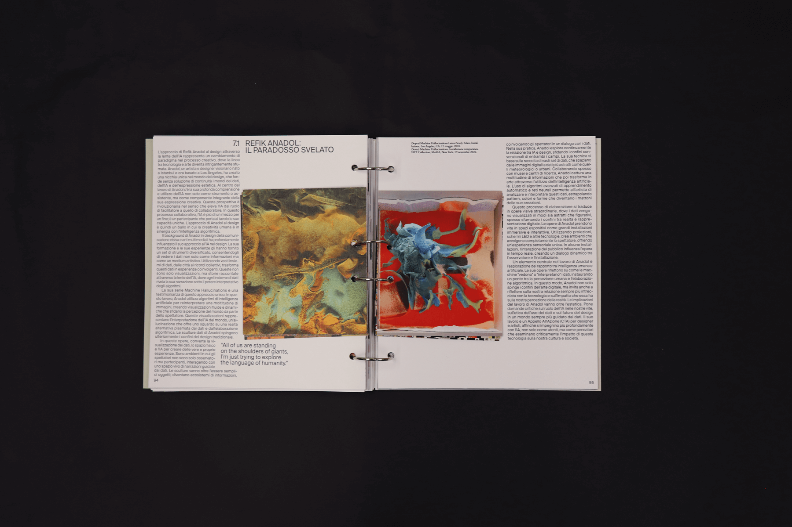
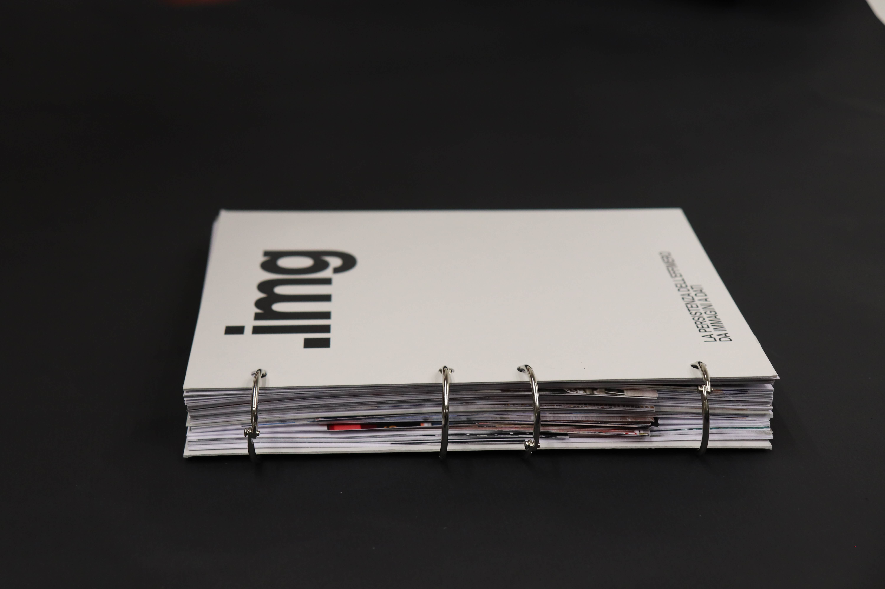
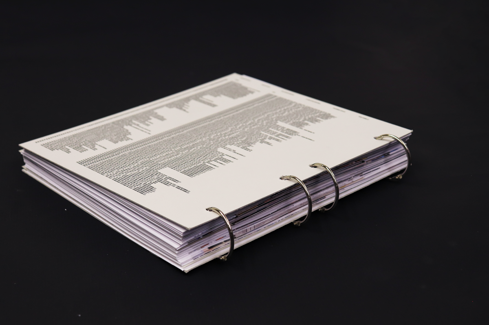

.IMG
/ EDITORIAL DESIGN
/ UNIVERSITY PROJECT
/ 2024
/ TEAM: G. BONALUMI, A. D'AIUTO, E. GALLIANI,
M. LA MACCHIA, G. POLIMENO, C. TOSI
“.IMG The Persistence of the Ephemeral: From Images to Data” is an editorial project whose aim is to highlight the role that the digital image takes on, evolving from a mere representation to a bearer of memories and data. The title highlights a paradox: digital images make fleeting moments permanent by turning them into lasting data, yet they remain fragile and subject to technological obsolescence and media volatility.
 






